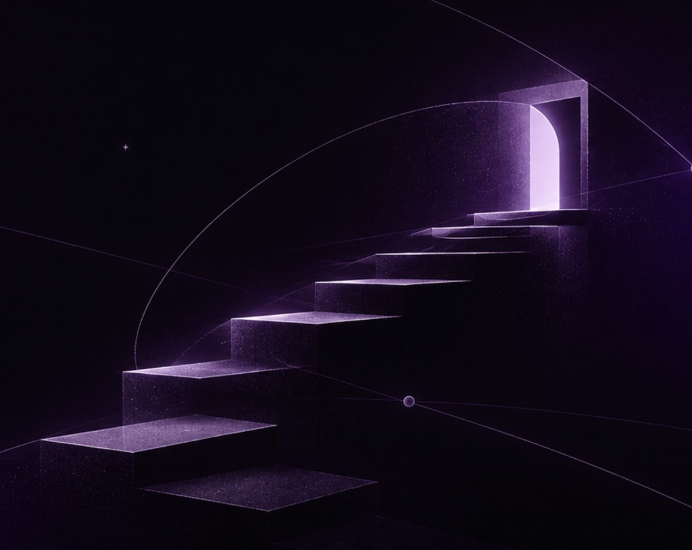

Shape the idea
Research the problem, understand the people around it, and find a direction worth pursuing.
Independent digital studio · Rafael & Adelya
We design and build useful digital products, apps, and websites — from the first question to a working launch.
We’re Rafael and Adelya — a two-person team drawn to the space between a good question and a useful thing.
We make our own apps and experiments, study how businesses and people work, and collaborate with others to bring considered ideas to life.
Arfa is a small, independent practice built around curiosity, care, and making things real.

Selected work · 01—03
Our work moves between everyday tools, playful experiments, and research. Here are a few things we’ve taken from an early thought to something you can explore.
How we help
Research the problem, understand the people around it, and find a direction worth pursuing.
Turn the direction into a clear product, service, or digital experience people can use.
Make a working version, test it in the real world, and improve what matters.
A good place to begin
Tell us what you’re thinking about — a product, a challenge, or a first rough idea. We’re open to thoughtful collaborations and interesting conversations.